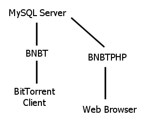

3.1 BNBTPHP (MySQL + PHP)
Please read this entire document.
BNBTPHP is a MySQL + PHP frontend for BNBT. You will need a PHP capable webserver and a MySQL server to use BNBTPHP. In most cases, you will run BNBT and BNBTPHP on the same server. Only advanced users should use BNBTPHP - regular users are encouraged to try BNBT's internal database before moving to BNBTPHP.

3.1.1 Installing BNBTPHP
You should install BNBTPHP before configuring BNBT to access your MySQL server since BNBTPHP creates the database and several tables for BNBT. To install BNBTPHP, copy the bnbtdir/bnbtphp folder into a folder accessible from your PHP capable webserver. Ensure ./include/config.inc.php has global write access before continuing. Access ./install.php from your web browser and follow the instructions. If you aren't using the ALLOWED table, please leave allowed_dir blank when you install BNBTPHP or else BNBTPHP won't function correctly.
3.1.2 Configuring BNBT
You should install BNBTPHP before configuring BNBT to access your MySQL server since BNBTPHP creates the database and several tables for BNBT. To configure BNBT to access your MySQL server, start BNBTMySQL.exe (or bnbtmysql for non Windows users). BNBT should exit almost immediately because it hasn't been properly configured, but it will generate the bnbt.cfg file (if it doesn't exit press Ctrl-C when you see "server - start"). Open bnbt.cfg in a text editor and fill in all the keys that start with "mysql_". I will cover the three most complicated keys below (if you are unsure about the other keys, see section 2.3),
- mysql_override_dstate: enable or disable per peer queries. When enabled, BNBT will use the DSTATE table to store per peer information. BNBT will not store any information internally, so the traditional BNBT interface will not function correctly. Note that BNBT will query the MySQL server at least once for each peer announce, so make sure your MySQL server can handle a lot of queries! BNBTPHP's stats.php will only work if this mysql_override_dstate is enabled.
- mysql_refresh_allowed_interval: the number of seconds to wait between refreshing the local copy of the ALLOWED table from MySQL. If you want to run an open tracker, delete the allowed_dir key and set mysql_refresh_allowed_interval = 0. If you want to use the ALLOWED table, delete the allowed_dir key and set mysql_refresh_allowed_interval = 300 (or some other reasonable value). In the first mode, BNBT will allow any torrent to be tracked but neither BNBT nor BNBTPHP will know additional torrent data such as filenames. In the second mode, BNBT will only track torrent hashes listed in the ALLOWED table but BNBTPHP will know additional torrent data such as filenames. In most cases, if you're using the ALLOWED table then you're allowing uploads through BNBTPHP. Note that BNBT expects the ALLOWED table to be maintained by BNBTPHP (or another frontend). It will not modify the ALLOWED table.
- mysql_refresh_stats_interval: the number of seconds to wait between refreshing the TORRENTS table in MySQL. If mysql_override_dstate is enabled, BNBT will simply execute several queries designed to generate the TORRENTS table from the DSTATE table each interval. If mysql_override_dstate is disabled, BNBT will execute a large INSERT statement using information from the internal database each interval.
3.1.3 The ALLOWED Table
TODO
3.1.4 The TORRENTS Table
TODO
3.1.5 The DSTATE Table
TODO